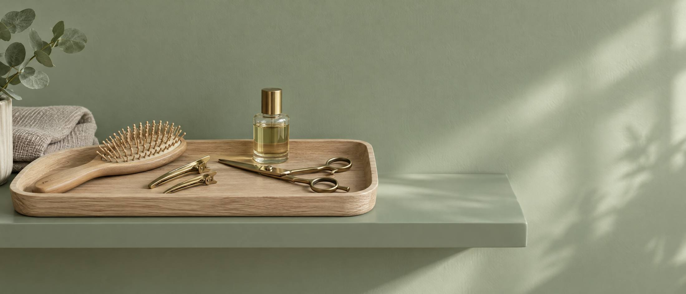
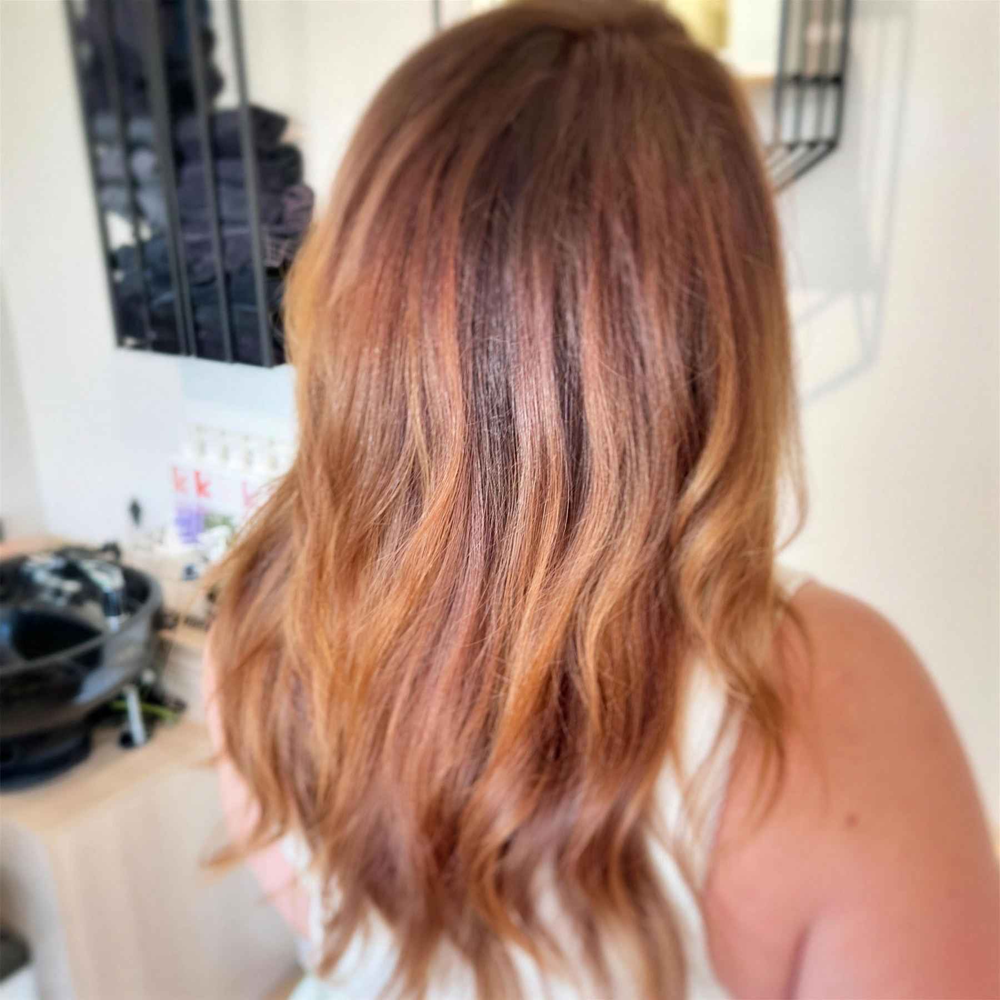
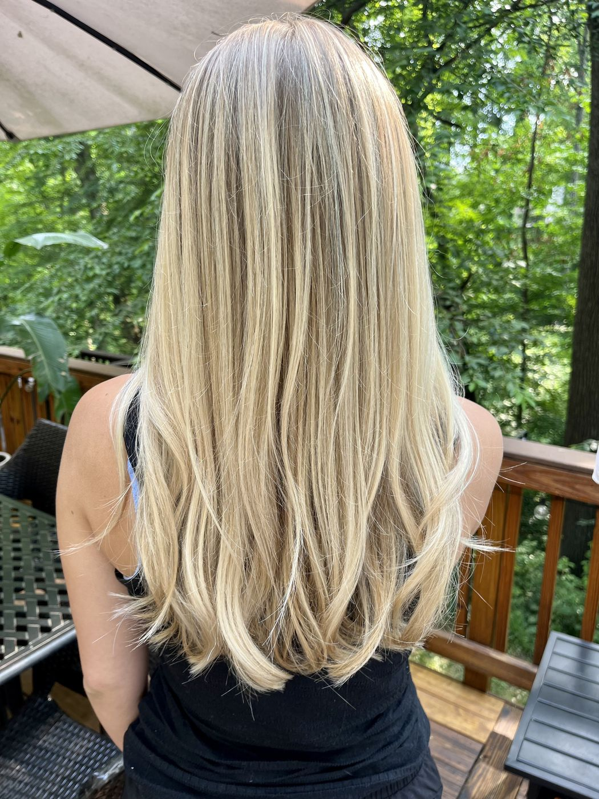
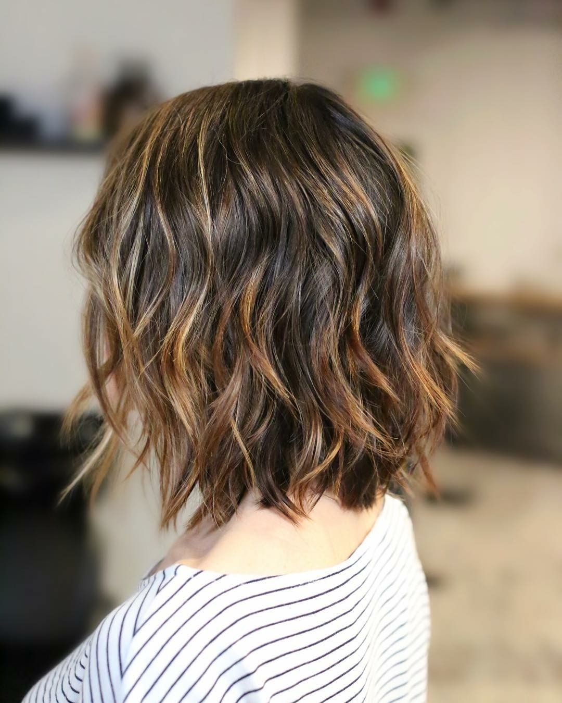
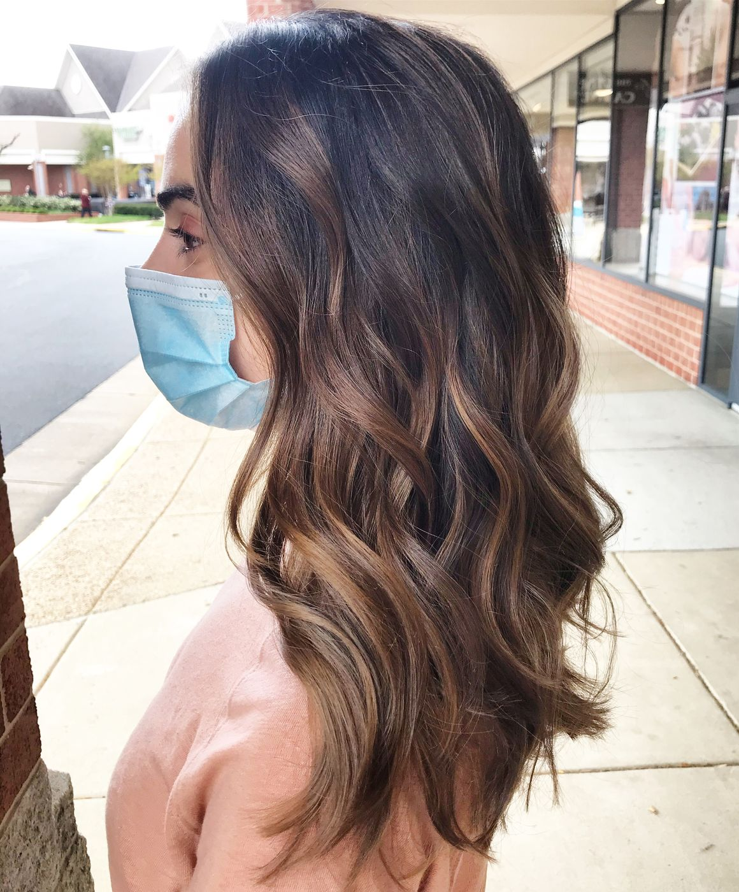

Healthy hair, customized color.
Color, cuts, keratin smoothing and extensions by Brandie Ryan in Sterling, VA. New guests start with a free 15 minute consultation.

Your visit, in two steps
Consult
New guests start with a $0, 15 minute consultation to talk through what suits their hair.
Create
Cut, color, highlights, balayage or smoothing, with a gloss included on most color services. Leave with a finished style, then book your next visit in a few taps.


What we do
Color and highlightsBalayage, partial and full highlights, all-over color and gloss. Cuts and stylingWomen's, men's and children's cuts, blow dry and style. Smoothing treatmentsFormaldehyde-free keratin treatments, including blonde formulas. ExtensionsTape-in and sew-in installs, move ups and removals.See the difference

 BeforeAfter
BeforeAfter
 BeforeAfter
BeforeAfterRecent work
See the gallery Find your shade

